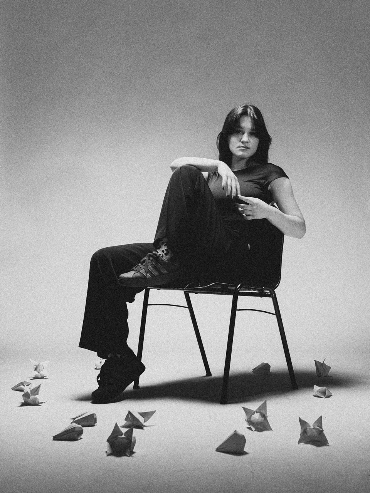

Skip to content
luka00
PHOTOGRAPHY & VISUALS
LJUBLJANA, SLOVENIA
WORK
ABOUT
CONTACT
EN
/
SL
WORK / PORTRAITS
PORTRAITS
ALL WORK
COMMISSIONS
PORTRAITS
FILM
01 / portraits
VIEW STORY ↗
Marlboro
02 / portraits
VIEW STORY ↗
Marko The Axe
03 / portraits
VIEW STORY ↗
RAVE

04 / portraits
VIEW STORY ↗
About Love
HAVE SOMETHING IN MIND?
LET’S MAKE
SOMETHING.
shot.byyluka@gmail.com ↗
INSTAGRAM ↗
+386 70 463 418 ↗